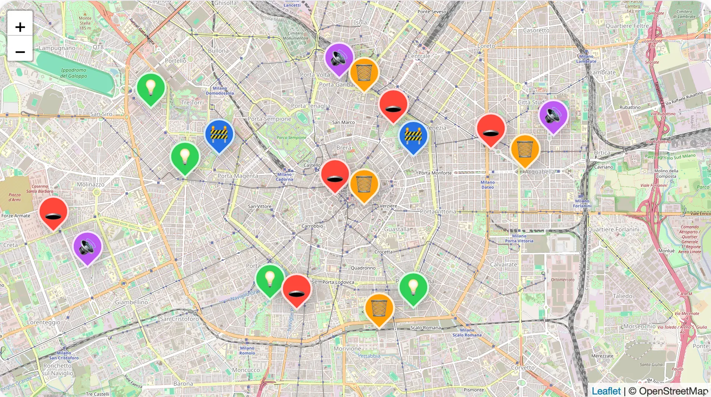
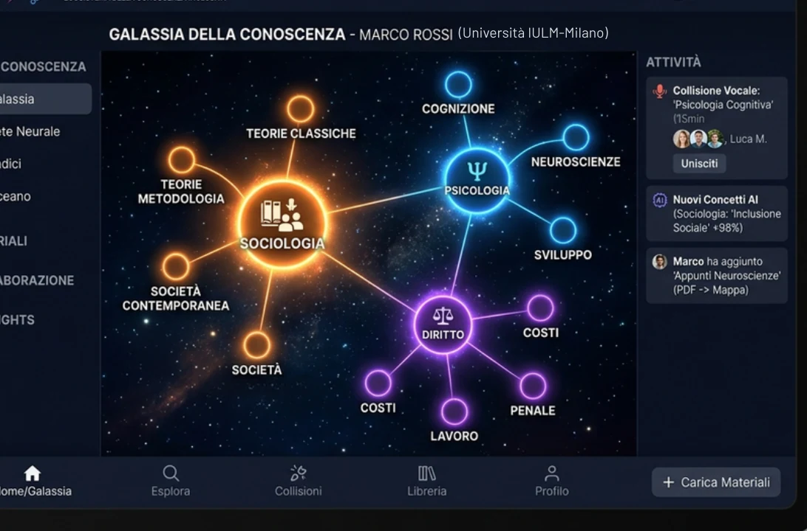
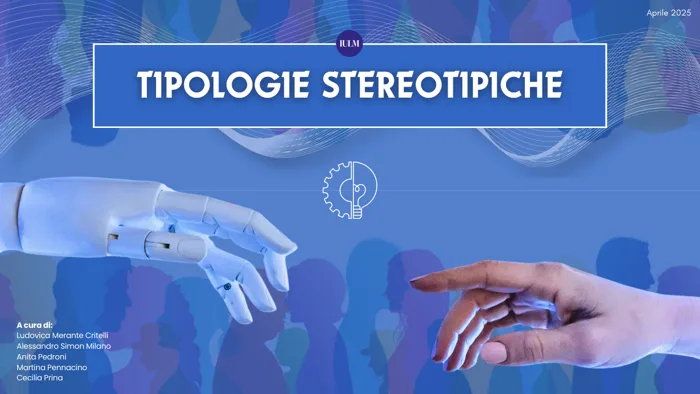
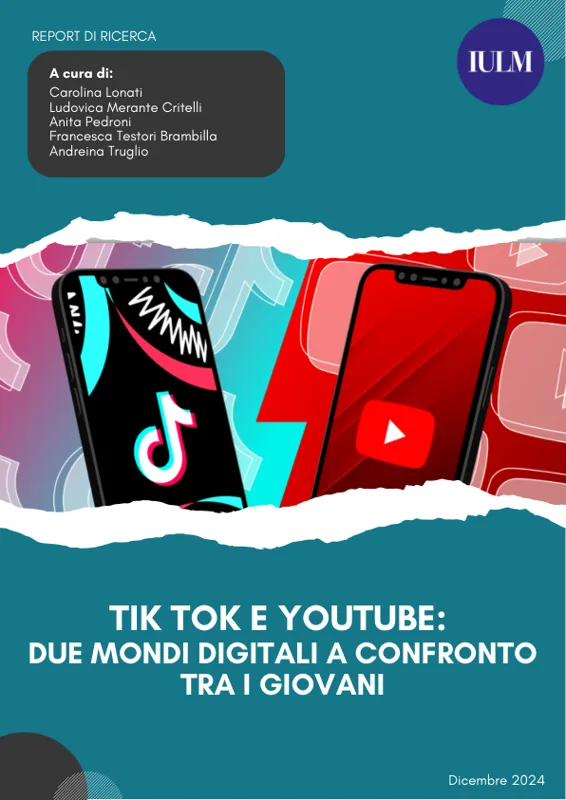

URBANiA
Civic IntelligenceUn prototipo di applicazione dedicata alla civic intelligence, sviluppato nel contesto del corso Certificazioni AI.
Esplora il progettoUn profilo interdisciplinare tra intelligenza artificiale, analisi, comunicazione e innovazione. Esploro come le tecnologie emergenti possano trasformare idee e bisogni in soluzioni orientate alle persone e al business.
Progetti realizzati durante il percorso universitario e attraverso esperienze personali. Lavori diversi per temi e approcci, nati dalla curiosità di approfondire idee, affrontare problemi e trasformare ciò che studio in proposte concrete.

Un prototipo di applicazione dedicata alla civic intelligence, sviluppato nel contesto del corso Certificazioni AI.
Esplora il progetto
Un concept EdTech individuale che esplora knowledge graph, apprendimento adattivo e collaborazione tra studenti. Le schermate sono visualizzazioni generate con AI, non un’app funzionante.
Esplora il progetto
Ricerca di gruppo sugli stereotipi sociali nelle risposte dell’AI generativa. Il mio contributo: prompt engineering e analisi degli output di ChatGPT e Gemini.
Esplora il progetto
Ricerca di gruppo basata su questionario Google Forms, raccolta dei dati, analisi quantitativa e visualizzazione dei risultati.
Esplora il progettoAnalisi di gruppo del modello di business, delle performance e del contesto competitivo di Etsy, con proposte di innovazione in realtà aumentata, logistica sostenibile ed espansione internazionale.
Esplora il progettoStudio Intelligenza Artificiale, Impresa e Società all’Università IULM. Il mio background in Comunicazione, Media e Pubblicità mi permette di affrontare temi tecnologici con una prospettiva attenta anche alle persone, al contesto e all’impatto delle soluzioni.
Laurea magistrale — Intelligenza Artificiale, Impresa e Società
Università IULM · 2025–in corso (prevista 2027)
Laurea triennale — Comunicazione, Media e Pubblicità
Università IULM · 2022–2025 · 107/110
Il percorso magistrale mi ha avvicinata alla gestione e all’interpretazione dei dati, attraverso lo studio di SQL, database management e metodi di analisi quantitativa. Nella ricerca su TikTok e YouTube ho contribuito alla raccolta dei dati tramite questionario e alla loro analisi e visualizzazione.
Approfondisco l’AI generativa, il prompt engineering e le applicazioni del machine learning al marketing. Nel progetto sugli stereotipi ho lavorato sui prompt e sull’analisi comparativa degli output di ChatGPT e Gemini; con NOVA ho esplorato possibili funzionalità AI per l’apprendimento.
Mi interessa capire come un bisogno possa diventare una proposta progettuale sostenibile. Con URBANiA ho lavorato a un prototipo orientato alla civic intelligence; per NOVA ho analizzato il contesto EdTech, le soluzioni esistenti e le principali condizioni di fattibilità, incluse le implicazioni etiche.
La formazione in Comunicazione, Media e Pubblicità mi aiuta a presentare contenuti complessi in modo chiaro e visivo. I lavori di gruppo hanno rafforzato collaborazione, pensiero critico e organizzazione; utilizzo strumenti come Canva, Microsoft Office e Google Workspace per strutturare materiali e presentazioni.
Sono interessata a opportunità e progetti all’intersezione tra intelligenza artificiale, innovazione digitale e business.